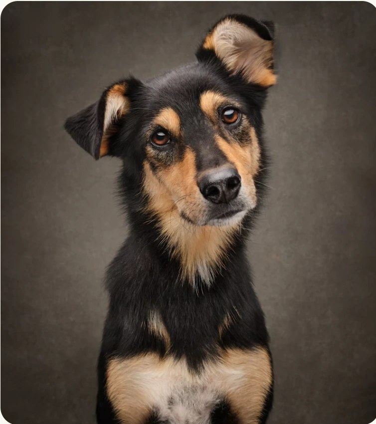

Back to all pets

 Available
Available
 Adopted
Adopted

AvailablePet ID PH-1042
Luna
Gentle soul, champion cuddler, professional sunbeam finder.
- Species
- Dog
- Breed
- Shepherd mix
- Age
- 2 years
- Sex
- Female
- Size
- Medium
- Good with
- Dogs, older kids
About Luna
Luna is a thoughtful, affectionate girl who blossoms with gentle encouragement. She loves quiet walks, soft toys, and curling up near her favorite people.
Health checked and readyVaccinated, microchipped, and spayed
Available
Pet ID PH-1043
Olive
Curious eyes, quiet purrs, and a heart full of love.
- Species
- Cat
- Breed
- Domestic shorthair
- Age
- 1 year
- Sex
- Female
- Size
- Small
- Good with
- Calm homes, adults
About Olive
Olive is a gentle, curious companion who enjoys peaceful afternoons and watching the world from a sunny window. She warms up to people who give her time and a cozy place to nap.
Health checked and readyVaccinated, microchipped, and spayed
Adopted
Pet ID PH-1044
Archie
Playful best friend with a soft spot for long walks.
- Species
- Dog
- Breed
- Labrador mix
- Age
- 4 years
- Sex
- Male
- Size
- Medium
- Good with
- Adults, gentle dogs
About Archie
Archie has found his forever home! He loves outdoor adventures, patient company, and treats after a good walk. His story is one more happy PawHaven adoption.
Health checked and readyVaccinated, microchipped, and neutered
Already adopted